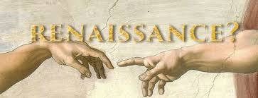
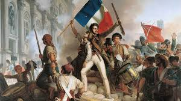
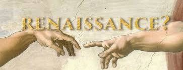
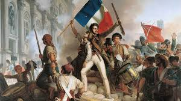

Heritage Chronicles: Journey Through Time
Welcome to Heritage Chronicles, a curated journey through history. Discover fascinating stories of civilizations, iconic leaders, and monumental events that shaped the world. From ancient ruins to modern legacies, delve deep into the past and experience history come to life.
Explore the Past 


